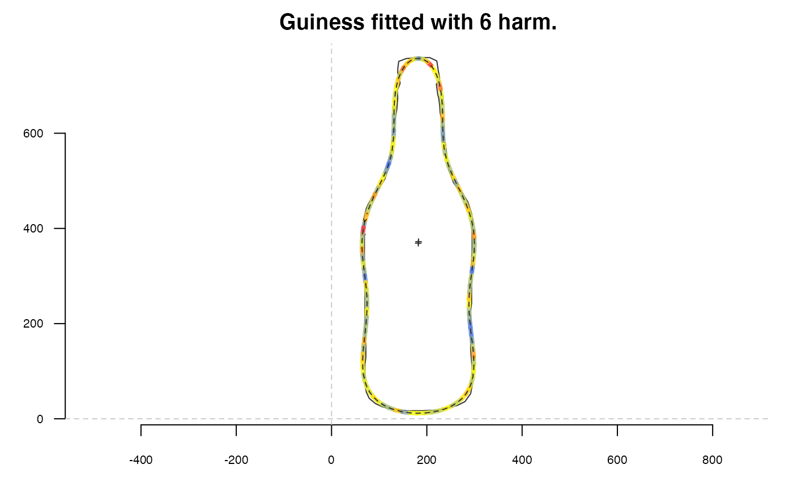

R/gr-domesticplotters.R
plot_devsegments.RdGiven a matrix of (x; y) coordinates, draws segments between every points defined by the row of the matrix and uses a color to display an information.
plot_devsegments(coo, cols, lwd = 1)
| coo | A matrix of coordinates. |
|---|---|
| cols | A vector of color of |
| lwd | The |
Other plotting functions:
coo_arrows(),
coo_draw(),
coo_listpanel(),
coo_lolli(),
coo_plot(),
coo_ruban(),
ldk_chull(),
ldk_confell(),
ldk_contour(),
ldk_labels(),
ldk_links(),
plot_table()
# we load some data guinness <- coo_sample(bot[9], 100) # we calculate the diff between 48 harm and one with 6 harm. out.6 <- efourier_i(efourier(guinness, nb.h=6), nb.pts=120) # we calculate deviations, you can also try 'edm' dev <- edm_nearest(out.6, guinness) / coo_centsize(out.6) # we prepare the color scale d.cut <- cut(dev, breaks=20, labels=FALSE, include.lowest=TRUE) cols <- paste0(col_summer(20)[d.cut], 'CC') # we draw the results coo_plot(guinness, main='Guiness fitted with 6 harm.', points=FALSE) par(xpd=NA) plot_devsegments(out.6, cols=cols, lwd=4) coo_draw(out.6, lty=2, points=FALSE, col=NA)  par(xpd=FALSE)